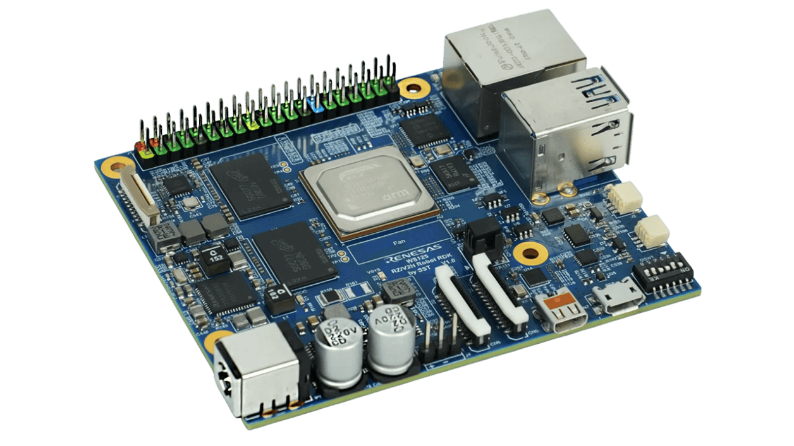
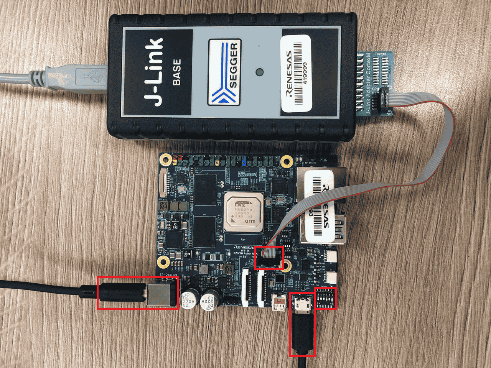

RZV2H-RDK
The RZV2H-RDK is a development board for the Renesas RZ/V2H (R9A09G057)
MPU. NuttX is ported to run on one of the two Cortex-R8 real-time cores
(CR8_0).
Board Overview


See the RZ/V2H product page for information about the RZ/V2H MPU.
Board Set-up


The following steps set up the board to debug/run NuttX over SWD with a J-Link debugger:
Configure the SWD interface to use the J-Link debugger via the DIP switches (highlighted in red in the picture above):
DSW1
Set
1-1
ON
1-2
OFF
1-3
ON
1-4
OFF
1-5
OFF
1-6
ON
Connect the J-Link debugger to the board’s CN1 debug connector.
Plug the CN8 serial port (to check the correct IPL).
4. Connect power to the board to P1 connector. The RDK board is powered by external 12 to 24V DC. It is recommended to use the 12V/2A power adapter included in the box.
To power off the board, disconnect the J-Link debugger first, then remove power.
Getting the HAL Renesas
Clock bring-up (see below) is implemented on top of Renesas’ vendored FSP
BSP code, which ships in a separate hal_renesas repository and is
not part of the nuttx git tree.
make context (run automatically as part of a normal build) clones the
repository at the pinned version into
arch/arm/src/common/renesas/hal_renesas, as defined in
arch/arm/src/common/renesas/Make.defs. Nothing needs to be cloned
manually. make distclean removes it.
HAL_RENESAS_URL and HAL_RENESAS_VERSION can be set in the
environment to use another repository or revision, for example a local
checkout:
HAL_RENESAS_URL=/path/to/hal_renesas make
Serial Consoles
The default nsh configuration uses SCI channel 0 as the serial console
at 115200 baud, 8 data bits, no parity, and one stop bit. The board pin
definitions route SCI0 as follows:
Signal |
Pin |
Board definition |
J1 header |
|---|---|---|---|
TXD0 |
|
|
J1 pin 36 |
RXD0 |
|
|
J1 pin 22 |
Connect a 3.3 V TTL UART adapter to the J1 header pins listed above. Cross the data lines so that J1 TXD0 connects to the adapter RX and J1 RXD0 connects to the adapter TX. Hardware flow control is not enabled. Use a 3.3 V TTL UART adapter, not an RS-232 adapter.
The relevant default options are:
CONFIG_RZV2H_UART_SCI=y
CONFIG_RZV2H_SCI_B_UART0=y
CONFIG_SCI0_SERIAL_CONSOLE=y
CONFIG_SCI0_BAUD=115200
CONFIG_SCI0_BITS=8
CONFIG_SCI0_PARITY=0
CONFIG_SCI0_2STOP=0
After boot, SCI0 is available as both /dev/console and /dev/ttyS0.
The terminal should display the NuttX banner followed by the nsh> prompt.
Verify the registration with:
nsh> ls /dev
/dev:
console
null
ttyS0
zero
Additional enabled SCI channels are registered as later /dev/ttyS*
devices in ascending hardware-channel order. Their TX and RX pin choices are
board-specific and are defined by BOARD_SCIn_TXD_GPIO and
BOARD_SCIn_RXD_GPIO in boards/arm/rzv2h/rzv2h-rdk/include/board.h.
SCI I2C
The SCI channels listed below can run as I2C masters in simple I2C mode.
SCI channel n is registered as
/dev/i2c<CONFIG_RZV2H_SCI_I2C_BUS_OFFSET + n>. The default offset is
10, so the SCI I2C buses do not overlap the RIIC I2C buses.
Pin Assignments
SDA uses the TXDn pin and SCL uses the RXDn pin of each SCI channel.
Channel |
SDA Pin |
SCL Pin |
|---|---|---|
SCI0 |
|
|
SCI1 |
|
|
SCI4 |
|
|
SCI5 |
|
|
SCI6 |
|
|
SCI7 |
|
|
SCI9 |
|
|
Configuration
The relevant options for enabling SCI7 as an example are:
CONFIG_I2C=y
CONFIG_RZV2H_SCI_I2C=y
CONFIG_RZV2H_SCI_I2C7=y
CONFIG_I2C_RESET=y
CONFIG_SYSTEM_I2CTOOL=y
CONFIG_I2CTOOL_MAXBUS=19
CONFIG_I2CTOOL_MAXBUS must be at least
CONFIG_RZV2H_SCI_I2C_BUS_OFFSET plus the SCI channel number, or
i2ctool rejects the bus number.
Each channel has additional Kconfig options for bit rate, SDA output delay, noise filter clock, bit-rate modulation, and interrupt priority. TXI and TEI are fixed GIC interrupts, so SCI I2C has no interrupt-select (SEL) options.
After boot, verify that the channel is registered:
nsh> ls /dev
/dev:
...
i2c17
...
Using the i2ctool Application
The sci-i2c board configuration (rzv2h-rdk:sci-i2c) enables
SCI7 and the i2ctool application. Use the i2c commands with the
SCI I2C bus number.
List which buses from CONFIG_I2CTOOL_MINBUS to CONFIG_I2CTOOL_MAXBUS
exist; bus 17 should be reported as present:
nsh> i2c bus
Scan for devices on bus 17 from address 0x03 to 0x77:
nsh> i2c dev -b 17 0x03 0x77
Get the register at address 0x00 from a device at address 0x50 on bus 17:
nsh> i2c get -b 17 -a 0x50 -r 0x00
Set value 0x5a to the register at address 0x10 of a device at address 0x50 on bus 17:
nsh> i2c set -b 17 -a 0x50 -r 0x10 0x5a
Reset bus 17 to recover a slave that holds the bus (requires
CONFIG_I2C_RESET):
nsh> i2c reset -b 17
PWM
The RZV2H-RDK exposes GPT-based PWM output on channels 0 through 15.
PWM Pin Assignments
Each GPT channel is routed to the following board pin.
Channel |
Pin |
|---|---|
GPT0 |
|
GPT1 |
|
GPT2 |
|
GPT3 |
|
GPT4 |
|
GPT5 |
|
GPT6 |
|
GPT7 |
|
GPT8 |
|
GPT9 |
|
GPT10 |
|
GPT11 |
|
GPT12 |
|
GPT13 |
|
GPT14 |
|
GPT15 |
|
These definitions are in boards/arm/rzv2h/rzv2h-rdk/include/board.h.
The pwm board configuration (rzv2h-rdk:pwm) enables GPT6
(PWM output on PA_4) and the pwm application for interactive testing.
CAN
The RZV2H-RDK board port defines pins for four CAN-FD channels
(CANFD0-CANFD3). CANFD0 and CANFD3 go through the on-board TCAN1046
transceiver to connectors J2 and J3; with CONFIG_RZV2H_CANFDn_STB_PIN,
the driver drives its standby pins (PA_2, PA_3) low when the
channel is opened. CANFD1 and CANFD2 are on the 40-pin header J1 and need
an external transceiver.
CAN Pin Assignments
Each CAN-FD channel is routed to the following board pins.
Channel |
TX Pin |
RX Pin |
|---|---|---|
CANFD0 |
|
|
CANFD1 |
|
|
CANFD2 |
|
|
CANFD3 |
|
|
These definitions are in boards/arm/rzv2h/rzv2h-rdk/include/board.h.
CAN Default Interrupt Select IDs
All CAN-FD interrupts are routed through the programmable INTC interrupt-select (SEL) lines. Each channel uses three: REC (reception into a Common FIFO), TRX (transmit complete or abort) and ERR (channel error). Two more lines are shared by all channels: GERR (global error) and GRECC (reception into an RX FIFO).
SEL IRQ numbers (configurable via Kconfig, valid range 353-479):
Channel |
REC SEL (GIC IRQ) |
TRX SEL (GIC IRQ) |
ERR SEL (GIC IRQ) |
|---|---|---|---|
CANFD0 |
417 (SEL64) |
416 (SEL63) |
415 (SEL62) |
CANFD1 |
414 (SEL61) |
413 (SEL60) |
412 (SEL59) |
CANFD2 |
411 (SEL58) |
410 (SEL57) |
409 (SEL56) |
CANFD3 |
408 (SEL55) |
407 (SEL54) |
406 (SEL53) |
The shared lines default to 419 (SEL66) for GERR
(CONFIG_RZV2H_CANFD_GERR_INTSEL) and 418 (SEL65) for GRECC
(CONFIG_RZV2H_CANFD_GREEC_INTSEL).
The relevant options for enabling CANFD0 in external loopback mode, as in
the can-loopback configuration, are:
CONFIG_CAN=y
CONFIG_CAN_EXTID=y
CONFIG_CAN_FD=y
CONFIG_CAN_ERRORS=y
CONFIG_CAN_LOOPBACK=y
CONFIG_RZV2H_CANFD=y
CONFIG_RZV2H_CANFD_LOOPBACK_EXTERNAL=y
CONFIG_RZV2H_CANFD0=y
CONFIG_RZV2H_CANFD_RXFIFO0_ENABLED=y
CONFIG_EXAMPLES_CAN=y
CONFIG_EXAMPLES_CAN_NMSGS=100
By default channel n receives in RX FIFO n, so RX FIFO n must be enabled
(CONFIG_RZV2H_CANFD_RXFIFOn_ENABLED) for each enabled channel. Each
channel has additional Kconfig options for bit rates, receive FIFO, TX
message buffers, error interrupts, REC/TRX/ERR interrupt-select (SEL) IRQ
numbers, and interrupt priority.
After boot, enabled CAN-FD channels are registered as /dev/canX
devices, where X is the channel number. Verify with ls /dev that
can0 is listed.
The can-loopback board configuration (rzv2h-rdk:can-loopback)
enables CANFD0 in external loopback mode and the can example. Other
channels can be enabled by adding the corresponding
CONFIG_RZV2H_CANFDn options.
Using the can Application
In the can-loopback configuration CANFD0 runs in external loopback
mode: it receives its own frames back through the on-board CAN
transceiver and sends its own acknowledge, so no other node is needed on
the bus.
Send and check 100 frames (CONFIG_EXAMPLES_CAN_NMSGS):
nsh> can
Send and check 20 frames:
nsh> can -n 20
Use standard IDs instead of extended IDs:
nsh> can -s
Send CAN FD frames without bit rate switching:
nsh> can -e
Each frame is printed when it is sent, then again with -- OK when the
frame read back matches it.
SocketCAN
With CONFIG_RZV2H_CANFD_SOCKET (CAN-FD option “CAN character driver or
SocketCAN support”), channel n is the SocketCAN network interface
can<n> instead of /dev/can<n>.
The can-socketcan board configuration (rzv2h-rdk:can-socketcan)
enables CANFD0 (can0, J2) and CANFD3 (can3, J3) with the
candump and cansend tools. Connect J2 to J3, then:
nsh> ifup can0
nsh> ifup can3
nsh> candump can3 &
nsh> cansend can0 123#DEADBEEF
nsh> cansend can0 12345678#1122
nsh> cansend can0 456##1DEADBEEF
The last command sends a CAN FD frame with bit rate switching. Bit rates
(SIOCSCANBITRATE, while the interface is down), filters
(SIOCACANSTDFILTER, SIOCACANEXTFILTER) and bus-off recovery
(SIOCCANRECOVERY) are set with ioctl() on a CAN socket.
DroneCAN
The can-dronecan board configuration (rzv2h-rdk:can-dronecan)
enables CANFD0 (/dev/can0, J2) and CANFD3 (/dev/can3, J3) with the
dronecan example. Connect J2 to J3, then listen on /dev/can3 and
start the example:
nsh> hexdump /dev/can3 &
nsh> dronecan
OpenCyphal
The can-opencyphal board configuration (rzv2h-rdk:can-opencyphal)
enables CANFD0 (can0, J2) and CANFD3 (can3, J3) with the
opencyphal example and the candump and cansend tools. Connect
J2 to J3, bring up both interfaces, listen on can3 and start the
example:
nsh> ifup can0
nsh> ifup can3
nsh> candump can3 &
nsh> opencyphal
SLCAN
The can-slcan board configuration (rzv2h-rdk:can-slcan) enables
CANFD0 (can0, J2), CANFD3 (can3, J3) and SCI1 (/dev/ttyS1,
TXD1 on P5_2, RXD1 on P5_3) with the slcan tool, which bridges
a CAN interface to a serial line using the SLCAN protocol. Connect J2 to
J3 and a host serial terminal to SCI1. Bridge can3 to /dev/ttyS1
and listen on can0, both in the background:
nsh> ifup can0
nsh> ifup can3
nsh> slcan can3 /dev/ttyS1 &
nsh> candump can0 &
On the terminal, send O to open the channel so slcan accepts send
commands. Frames typed after that are sent on can3. t sends a
standard ID frame and T an extended ID frame, each followed by the ID
(3 or 8 hex digits), the data length and the data bytes:
O
t7FF3010299
t1238DEADBEEF11223344
candump shows each frame received on can0:
can0 7FF [3] 01 02 99
can0 123 [8] DE AD BE EF 11 22 33 44
QSPI Flash
The board port drives the xSPI controller in QSPI mode (see
the RZV2H peripheral overview) to talk to a SPI NOR
flash device. There is no flash part wired into the NuttX tree for this
board; select the matching CONFIG_MTD_* driver for the part actually
fitted on the RDK before enabling CONFIG_RZV2H_QSPI.
rzv2h_qspi_initialize()
(boards/arm/rzv2h/rzv2h-rdk/src/rzv2h_qspi.c) brings up the bus,
initializes the selected MTD flash driver, and then either:
mounts the whole chip as a single flat LittleFS volume at
/mnt/qspi(default), orif
CONFIG_MTD_PARTITIONis enabled, splits the chip into three MTD partitions first (see Partitioning below), and mounts LittleFS on the remaining space only.
Read protocol
The default read protocol is 1S-4S-4S. 1S-1S-1S, 1S-2S-2S,
and 4S-4S-4S also work on this board. They are selected with the
CONFIG_RZV2H_RDK_QSPI_N25QXXX_PROTOCOL_* choice (see
the RZV2H peripheral overview).
This board ties XSPI0_DS to GND through a 10K resistor (R47). It
also leaves XSPI0_IO4-XSPI0_IO7 unconnected to the flash. As a
result, the DDR protocols cannot work here:
Selecting
CONFIG_RZV2H_RDK_QSPI_N25QXXX_PROTOCOL_4S4D4Dstops the build with an#error.8D-8D-8Dis not supported.
Partitioning
Enabling CONFIG_MTD_PARTITION (plus CONFIG_MTD_CONFIG or
CONFIG_MTD_CONFIG_NVS) makes rzv2h_qspi_partition() divide
the flash chip into three independent regions, so that firmware,
parameters, and logging cannot corrupt one another on the same chip:
Partition |
Size (Kconfig) |
Exposed as |
Purpose |
|---|---|---|---|
Firmware image |
|
|
Fixed-offset region for a flight-stack (e.g. PX4) firmware image, read/written directly by a bootloader/loader |
Parameter/configuration |
|
|
Key/value parameter and configuration store, isolated from filesystem I/O |
Mission data / flight logs |
remainder of the chip |
|
Ordinary files: mission data, flight logs, and (optionally) the redirected syslog file described below |
Both partition sizes are rounded down to a multiple of the flash erase
size. If the requested firmware and parameter partitions do not fit
within the chip’s erase-block count, rzv2h_qspi_initialize()
fails with an error logged via syslog().
When CONFIG_MTD_PARTITION is disabled, none of the above applies and
the chip is used as a single flat LittleFS volume, as before.
Persistent syslog
CONFIG_RZV2H_RDK_QSPI_SYSLOG_FILE redirects kernel syslog() output to
a file on the mounted QSPI LittleFS volume (default path
/mnt/qspi/syslog.txt, set via CONFIG_RZV2H_RDK_QSPI_SYSLOG_FILE_PATH)
once it is mounted, so log messages persist across resets. This requires
CONFIG_FS_LITTLEFS and CONFIG_SYSLOG_FILE. When
CONFIG_MTD_PARTITION is enabled, this file lives in the mission-data
/ flight-log partition described above, not in the firmware or parameter
partitions.
Configurations
nsh
NuttShell configuration exercising clock, MPU, interrupt/timer, GPIO, and
SCI-B UART bring-up on CR8_0. SCI0 provides the default 115200-8N1 NSH
console through J1 pin 22 (RXD0) and J1 pin 36 (TXD0) and is registered
as /dev/console and /dev/ttyS0.
nsh-leds
This configuration enables CONFIG_USERLED, registers /dev/userleds,
and includes the standard NuttX leds example. Run leds to cycle the
active-low P11_4 and P11_5 LED outputs. The generic /dev/gpio0,
/dev/gpio1, and /dev/gpio2 interfaces are also available for
individual read/write testing.
sci-i2c
SCI I2C configuration enabling SCI channel 7 in simple I2C mode with the
i2ctool application. The channel is registered as /dev/i2c17 at
boot. SDA is on J1 pin 3 (P7_6) and SCL on J1 pin 5 (P7_7), which
have on-board pull-ups. Bus reset recovery (CONFIG_I2C_RESET) is
enabled.
can-loopback
CAN configuration enabling CANFD0 in external loopback mode with the
can example, which sends 100 CAN FD frames and checks that each one is
read back unchanged. The channel is registered as /dev/can0 at boot.
CANFD0 uses the on-board transceiver (J2); no other node is needed on the
bus.
can-socketcan
SocketCAN configuration: CANFD0 and CANFD3 are the network interfaces
can0 (J2) and can3 (J3), with the candump and cansend
tools. Bring them up with ifup can0 and ifup can3.
can-dronecan
DroneCAN configuration: CANFD0 and CANFD3 are the character devices
/dev/can0 (J2) and /dev/can3 (J3), with the dronecan example
node on /dev/can0.
can-opencyphal
OpenCyphal configuration: CANFD0 and CANFD3 are the network interfaces
can0 (J2) and can3 (J3), with the opencyphal example node on
can0 and the candump and cansend tools.
can-slcan
SLCAN configuration: CANFD0 and CANFD3 are the network interfaces can0
(J2) and can3 (J3), with the slcan tool on SCI1 (/dev/ttyS1).
nsh-xspi
Exercises the xSPI controller in QSPI mode (see QSPI Flash above).
Enables CONFIG_RZV2H_QSPI with an N25QXXX MTD flash driver,
mounted as a single flat LittleFS volume at /mnt/qspi. Partitioning
(CONFIG_MTD_PARTITION) and syslog redirection
(CONFIG_RZV2H_RDK_QSPI_SYSLOG_FILE) are optional features (see above) not
enabled by this defconfig. As with the other configurations, there is no
working console driver yet, so this is intended for bring-up validation
with a debugger.